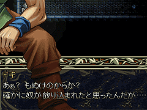
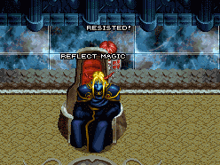
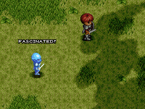
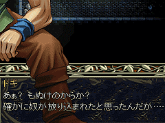
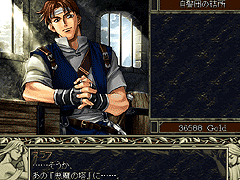
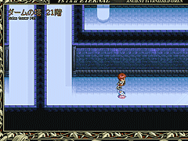

目次 > ゲームについて > 日本Falcom 攻略 > Ys > 情報
らんの眼
Ys(イース) Ys Eternal(VE)/Ys Complete
| 概要 | 情報 | ボス戦 |
| 敵キャラ一覧 | アイテム一覧 | 攻略チャート |
| 地図 | ダウンロード | イースの本 |
| 経験値表 | 地名一覧 | タイムアタック |
| ETERNAL / Complete 比較 | キャラクター一覧 | |
| Ys 攻略へ | 目次へ戻る |
| [ 1 ] [ 2 ] [ 3 ] [ 4 ] [ 5 ] [ 6 ] [ 7 ] [ 8 ] [ 9 ] |
| 不遇のオムルガン |
| 「ys1_win.exe (Ys I Complete の実行ファイル)」をバイナリエディタなどで開くと、ある場所に敵キャラの名前を列挙した部分があります。 そこを見ると、ボスキャラのオムルガン(Omulgun)の文字だけありません。 (記述されているデータ) Dalk Fukt Yogleks Khonsclard Pictimos Vagullion Nygtilger Jenocres Bordish Euchreas Towars Chryolos Selnurge Kelmarel Molfes Irebowg Wilewarer Vilvan Xomack Zinoyd Normass Acumate Jestona Refrygun Brayzal Limendy Chelasken Karon Menon Dynick Othclos Gryel Nubrrow Dinvel Lyus Rescoyd Looter Bolner Uhnos Unugun Rheboll Oacrot Curloyd Picard |
| キャラクターの上に表示される文字 |
| 実行ファイルをバイナリエディタなどで開くと、キャラクターの上に表示される文字を見ることができます。 以下に記述されている文字と、その出現条件を書きます。 ・FULL RECOVERED (完全に回復) 条件不明。「ヒールポーション」を使うと出る? ・RETURN (リターン) 条件不明。「ウィング」を使うと出る? ETERNAL のみに記述があり。 ・．．．? サラ＝トバ の前で「ミラー」を使う。 ETERNAL のみ。 ・(^_^) YOYUTCHI ミネアの町の看護婦さんの前で「ミラー」を使う。 ETERNAL のみ。 ・ZZZ．．． ゼピック村の湖にいる老人のところで「ミラー」を使う。 ・? 「ミラー」を使う。 ETERNAL のみ。 ・REFLECT MAGIC (魔法を反射) ダルク＝ファクトに対して「ミラー」を使う。 ・RESISTED! (無効化) ダルク＝ファクトに対して「ミラー」を使う。  ・FASCINATED! (魅了された) 敵に対して「ミラー」を使う。  ・INVOKE MIRROR (ミラーを起動) 条件不明。 |
| ドギと「偶像」 |
| ダームの塔 地下1 階の壁をドギが壊す前に、あらかじめアドルが「偶像」を装備していると、セリフが若干変化します。  |
| ドギと「マスク オブ アイズ」 |
| ダームの塔 地下1 階の壁をドギが壊す前に、あらかじめアドルが「マスク オブ アイズ」を装備していると、ドギ出現と同時に「マスク オブ アイズ」が自動的に外されます。 |
| スラフの応援 |
| ダームの塔へ行く前に、バルバドの港町に戻りスラフに話しかけると、アドルを応援してくれます。  |
| 敵がいなくなる |
| ヨグレクス&オムルガンを倒し、大きな鏡が割れる前に、小さな鏡を使いワープすると、ダームの塔 21 階にいるはずの敵が全く表示されなくなります。 ただし、いったん回廊に出るなどしてマップを切り替えると元に戻ってしまいます。  |
| [ 1 ] [ 2 ] [ 3 ] [ 4 ] [ 5 ] [ 6 ] [ 7 ] [ 8 ] [ 9 ] |
| 概要 | 情報 | ボス戦 |
| 敵キャラ一覧 | アイテム一覧 | 攻略チャート |
| 地図 | ダウンロード | イースの本 |
| 経験値表 | 地名一覧 | タイムアタック |
| ETERNAL / Complete 比較 | キャラクター一覧 | |
| ページ上部へ | Ys 攻略へ | 目次へ戻る |